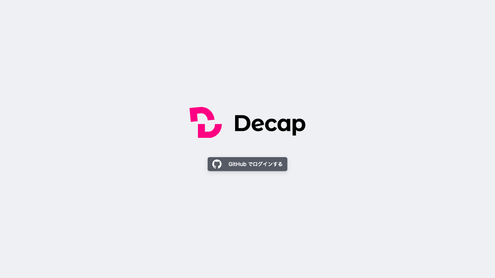

（日付降順）
ソートドロップダウン表示
PASS

PASS
PASS
（年・年月）
グルーピングドロップダウン表示

PASS
PASS

PASS
（認証後CMS全体表示）

PASS

PASS

PASS
日付: 2026-02-25 | 要件: CMS-17（記事デフォルトソート日付降順）、CMS-18（記事月別グルーピング）
テスト結果: Vitest 532 PASS / Playwright E2E 376 PASS（8 skip）
方式: window.open モンキーパッチ + GitHub APIモック（Playwright test runner対応）
| 検証項目 | PC (1280x720) | iPad (810x1080) | iPhone 14 (390x844) |
|---|---|---|---|
| CMS-17: デフォルトソート （日付降順） ソートドロップダウン表示 |
 PASS |
PASS |
PASS |
| CMS-18: グルーピング （年・年月） グルーピングドロップダウン表示 |
PASS |
PASS |
PASS |
| レイアウト検証 （認証後CMS全体表示） |
PASS |
PASS |
PASS |
sortable_fields:
- { field: date, default_sort: desc } # CMS-17: 日付降順デフォルトソート
- title
view_groups: # CMS-18: 年・年月グルーピング
- label: "年"
field: date
pattern: \d{4}
- label: "年月"
field: date
pattern: \d{4}-\d{2}